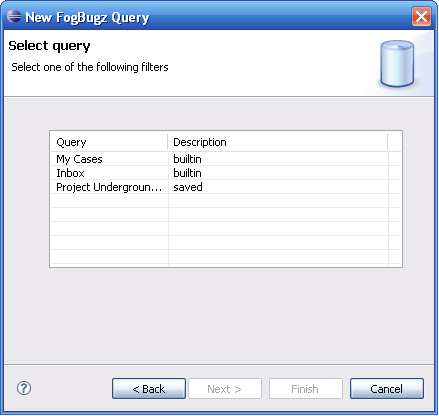

Creating New FogBugz Query
- To populate the task list with tasks from FogBugz, we need to create a Query
- Select Window -> Show View -> Other -> Mylyn -> Task List.
- From the context menu, select New -> Query and choose a FogBugz Task Repository
- The available filters are fetched from the FogBugz server and listed. Choose one of the filters to be used as the query.
- The cases that belong to the selected filter are imported as Mylyn tasks and listed in the task list
